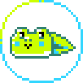
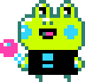
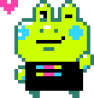

<div class="row dev-stage-selector">
	<div class="col-xs-12"
		ng-repeat="stage in [
			$ctrl.Game.DEVELOPMENT_STATUS_DEVLOG,
			$ctrl.Game.DEVELOPMENT_STATUS_WIP,
			$ctrl.Game.DEVELOPMENT_STATUS_FINISHED,
		]"
		>
		<a ng-click="$ctrl.select( stage )">
			<gj-card is-disabled="!$ctrl.isEnabled( stage )">
				<div class="dev-stage-selector-content">

					<div class="card-title">
						<h4>
							<span class="jolticon"
								ng-class="$ctrl.game.development_status == stage ? 'jolticon-radio-circle-filled' : 'jolticon-radio-circle'"
							></span>
							<span ng-if="::stage == $ctrl.Game.DEVELOPMENT_STATUS_DEVLOG" translate>Devlog-Only</span>
							<span ng-if="::stage == $ctrl.Game.DEVELOPMENT_STATUS_WIP" translate>Early Access</span>
							<span ng-if="::stage == $ctrl.Game.DEVELOPMENT_STATUS_FINISHED" translate>Complete/Stable</span>
						</h4>
					</div>

					<div class="card-content">
						<div ng-if="::stage == $ctrl.Game.DEVELOPMENT_STATUS_DEVLOG">
							<div translate>
								You don't have anything playable yet, but would like to share active game development in the form of images, videos, posts and more. Your game page will use the new Devlog format.
							</div>
						</div>

						<div ng-if="::stage == $ctrl.Game.DEVELOPMENT_STATUS_WIP">
							<div translate>
								Your game has playable builds, but you're still actively developing it.
							</div>
						</div>

						<div ng-if="::stage == $ctrl.Game.DEVELOPMENT_STATUS_FINISHED">
							<div translate>
								Your game is complete. It's in a stable state and you only plan on making bug fixes, performance optimizations, or small improvements.
							</div>
						</div>
					</div>

					<div ng-if="!$ctrl.isEnabled( stage )">
						<br>
						<div class="alert alert-info sans-margin">
							<span class="jolticon jolticon-notice"></span>
							<span translate>You must have active published packages to transition to this stage.</span>
						</div>
					</div>

				</div>

				<div class="dev-stage-selector-mascot">

					

					

					

				</div>
			</gj-card>
		</a>
	</div>
</div>
